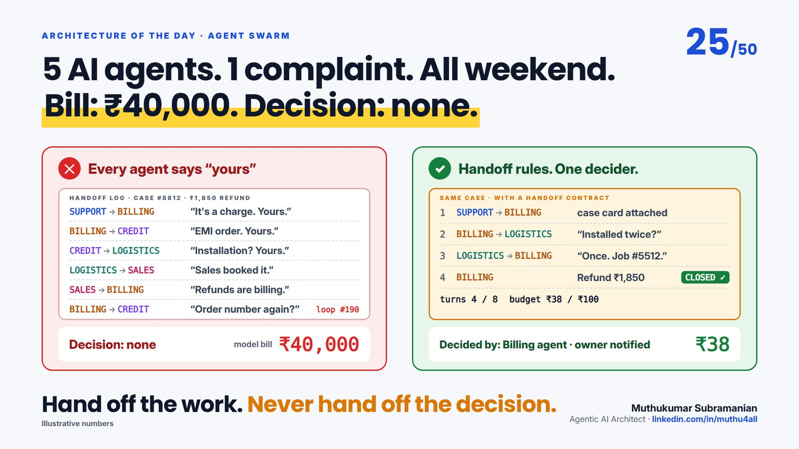
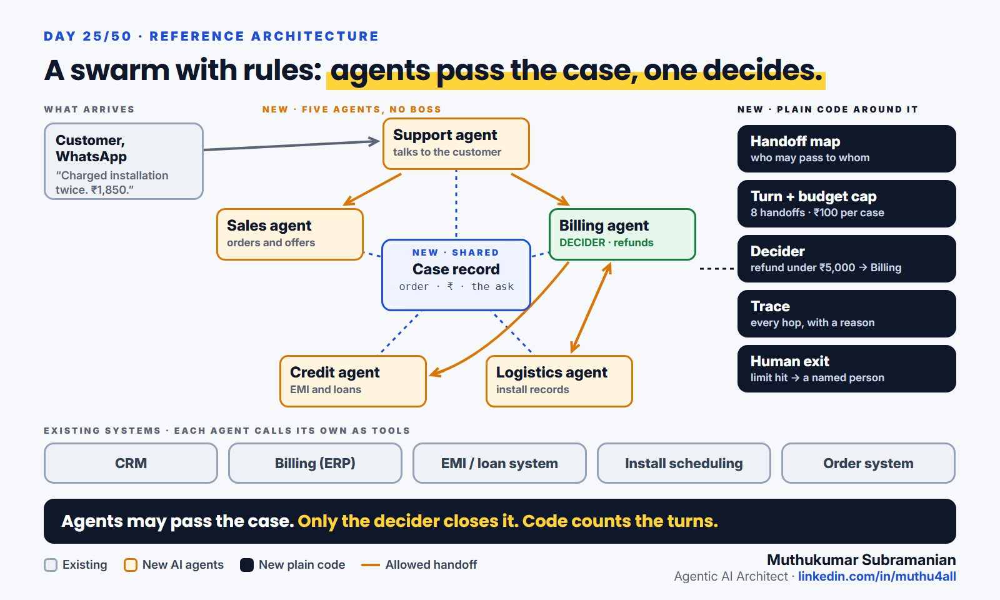
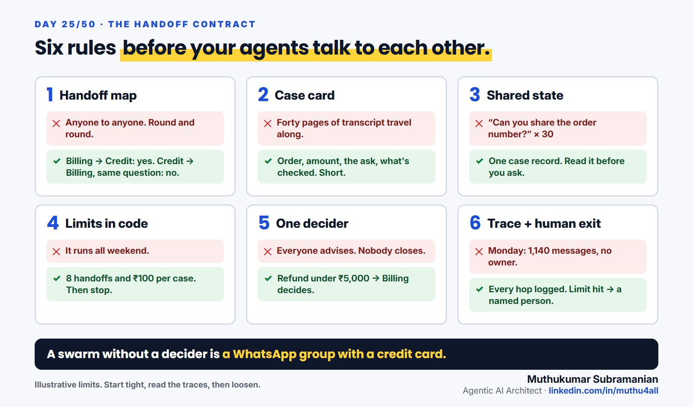

Five AI Agents Held a Meeting. It Cost ₹40,000 and Decided Nothing.
By Muthukumar Subramanian · Agentic AI Architect

Saturday, 9:40 PM. Arul in Tirunelveli types one line into an appliance brand's WhatsApp support: "You charged me installation twice. ₹1,850. Please refund."
Monday, 9 AM. The support head opens the case. Nobody has replied to Arul. The trace has 1,140 messages in it.
The support agent passed it to billing, because it was a charge. Billing saw an EMI order and passed it to credit. Credit saw "installation" and passed it to logistics. Logistics said sales had booked the slot. Sales said refunds belong to billing. Round it went, each agent politely asking the last one for the order number again.
The model bill for one ₹1,850 complaint: about ₹40,000. Decision: none. (Arul, the brand and every number here are illustrative.)
Five agents with no owner aren't a team. They're a meeting.
Yesterday, on Day 24, the agents had a boss. Today's pattern has none.
The architecture today
In an agent swarm, each agent is a specialist with its own instructions and tools, and any agent can hand the case straight to another. No supervisor in the middle.
→ An agent decides "this isn't mine" and calls a handoff, which is just a tool, something like transfer_to_billing.
→ The next agent takes over the conversation, often with the whole history attached.
→ It ends when some agent answers the customer. If none does, it doesn't end.
That last line is the whole article.
OpenAI's Swarm, an experimental, educational library from 2024, made the pattern popular; its production successor, the OpenAI Agents SDK, is built around handoffs. LangGraph, AWS's Strands Agents and Microsoft Agent Framework all ship their own versions.

Why good agents loop
Here's the part people don't like hearing: none of the five agents was wrong. Each one made a reasonable call. The architecture let five reasonable calls go in a circle.
Researchers at UC Berkeley studied multi-agent failures across seven frameworks and named 14 failure modes. Three read like Arul's weekend: step repetition, loss of conversation history, and agents unaware of when to stop. Cost grows quietly too. Anthropic has said its multi-agent research system uses about 15 times the tokens of a normal chat, and that's when it works. When it loops, every handoff carries a longer transcript.
A swarm without a decider is a WhatsApp group with a credit card.
Where AI plugs in now: a handoff contract
You don't fix this with a better prompt. You fix it with six rules, in plain code:
- A handoff map. Who may hand to whom. Billing may pass to credit. Credit may not pass the same question back to billing.
- A case card. What travels with the handoff: order, amount, the ask, what's already checked. Not forty pages of transcript.
- One shared case record. Every agent reads it before asking anything. Nobody asks for the order number twice.
- A turn limit and a budget per case. Say, eight handoffs and ₹100. Code counts them, not the model. (Day 7's AI gateway holds the money side.)
- A decider for each case type. A refund under ₹5,000? Billing decides. Others can advise. One agent closes.
- A trace and a human exit. Every hop logged with its reason. When a limit is hit, the case goes to a named person, not a sixth agent.
Same complaint, with the contract: support → billing with the case card. Billing asks logistics one question: "Installed twice?" Logistics: "Once." Billing refunds ₹1,850 and notifies the owner. Four turns. About ₹38. Decided by: the billing agent.

Where it's heading with agents
In two or three years, I expect long customer journeys to run this way: a home loan, a car purchase, an insurance claim. Each crosses five or six departments, each with its own agent. A swarm fits because real journeys aren't straight lines; the customer jumps from price to EMI to delivery and back. The shared case record becomes the product, and handoffs will cross company lines too, which is where Day 28 goes.
Watch it work
👉 [GIF: A-day25-4-in-article-swarm-loop.gif]
Caption: Five agents pass one complaint around while the bill climbs. Then the same case with a map, a turn limit and a decider: closed in four turns. All figures illustrative.
Pros
→ Flexible: the case goes wherever the customer's problem goes, with no supervisor bottleneck
→ Each department owns and improves its own agent
→ Simple cases can be fast and cheap, with no extra hop through a central boss
Cons
→ Nobody owns the outcome unless you name one
→ Costs grow quietly, because every handoff can drag the whole history along
→ Hard to debug: the failure isn't in any single agent, it's in the pattern between them
The hard parts
The honest tension: a swarm is great when the path is unpredictable and each department really is different. It's bad when the outcome needs one accountable owner, like a refund or a loan decision. For those, use Day 24's supervisor, or a swarm with a hard decider.
Naming the decider is an org-chart fight, not a model problem. Settle it with people before you settle it in code.
And I don't think anyone has a proven formula for turn limits yet. Start tight, read the traces for two weeks, then loosen.
This is where new roles show up. An AgentOps engineer, who runs agents in production the way an SRE runs services, owns the budgets, the turn limits and a weekly "loop report". An AI Agent Manager, the business person who answers for what the agents decide, signs off the decider map. The titles are still settling. The angry Monday call isn't.
The opportunity
Who pays? Banks, NBFCs, insurers, telecoms and appliance brands: anyone whose customers already complain about being bounced between departments.
Two products:
→ Cross-department journey agents with the contract built in. Sell the outcome: "refund cases closed in under five turns, with a named decider and a full trace."
→ Agent conversation audits. Contact centres already pay for call-quality audits. This is the same for agent-to-agent talk: find the loops, the re-asks and the cost per decision, and report it monthly. India's BPO industry already has the people and the habit. The new skill is reading traces.
Tools to try
OpenAI Agents SDK (handoffs, input filters, a max-turns limit) · LangGraph Swarm · Strands Agents Swarm from AWS (handoff limits, timeouts, repetitive-handoff detection) · Microsoft Agent Framework (handoff and group-chat orchestration, the successor to AutoGen and Semantic Kernel) · CrewAI (iteration limits, delegation off by default).
Your turn 👇
For a refund case: swarm or supervisor? One word.
Tag the person who gets the angry call on Monday when the weekend bot went in circles.
Day 25 of 50 · follow along. Tomorrow: Day 26 · Your AI Agent Asks Before Paying. Your Team Clicks "Approve" 400 Times a Day.